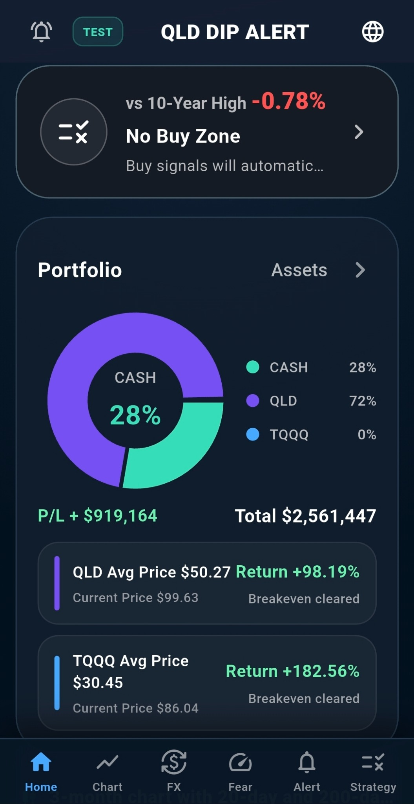
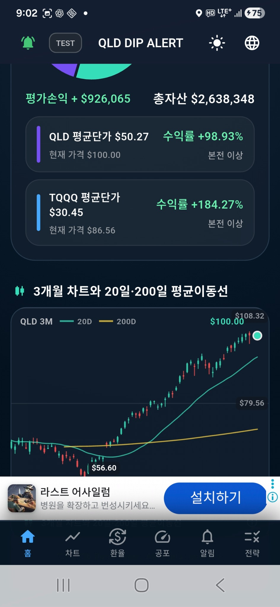
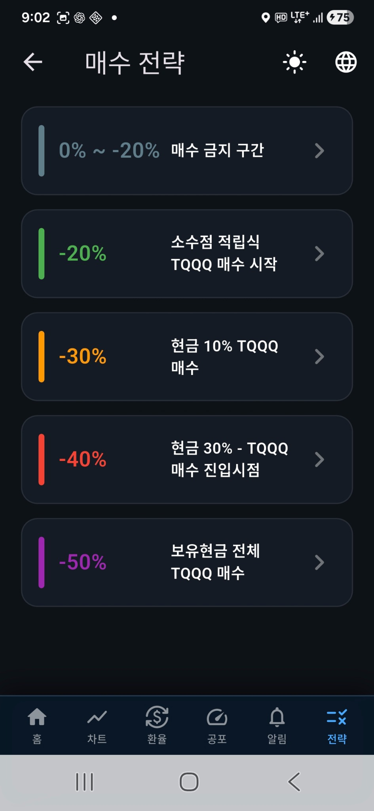
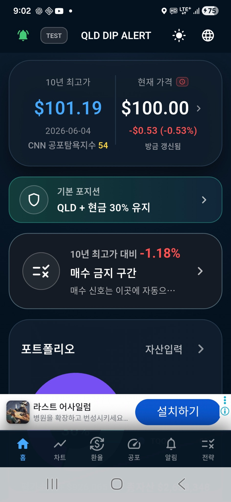

Q
QLD DIP ALERT
English
한국어
Android Google Play
iPhone Web App

QLD · TQQQ portfolio
20-day · 200-day moving averages



WINDOWS PC · 1.2.0
QLD Alert PC
Windows 10/11 · 64-bit · 115.7 MB
TQQQ Alert PC
Windows 10/11 · 64-bit · 115.7 MB
SOXL Alert PC
Windows 10/11 · 64-bit · 115.7 MB
QQQM Alert PC
Windows 10/11 · 64-bit · 115.7 MB
Android Google Play